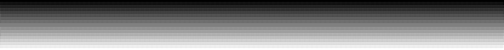
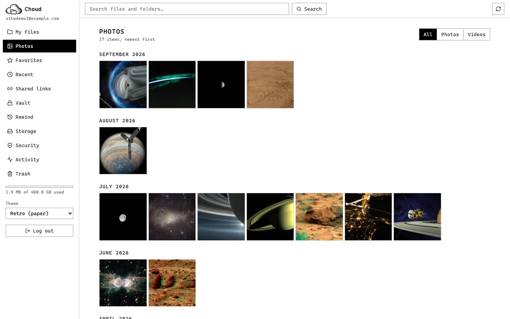
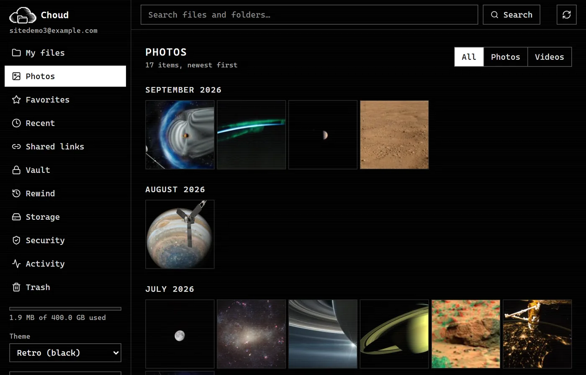
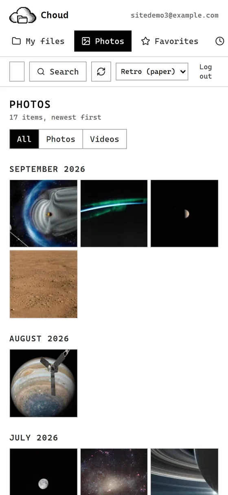
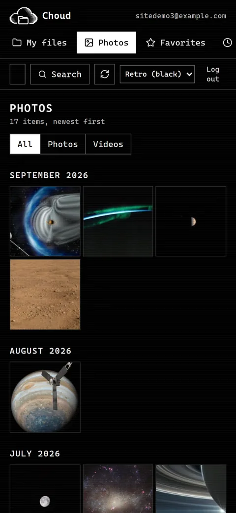

Your own cloud. Your own server. Nobody else's.
Choud is a free, open-source Google Drive alternative you run on one spare Linux machine at home. Your phone backs up its photos to it, your laptop syncs folders with it, and every byte stays on a disk you own.
Fun fact about this page: the fonts are hosted right here. A privacy project that phoned Google just to draw its own headline would be a bit rich. Open your browser's Network tab. We'll wait.
Drop any file on the cloud.
- file
- choud-logo-light.png · 14.1 KB
- sha256
- 8aa8ec03cf5988a6…617fa64e
- stored at
- objects/8a/8aa8ec03cf59…
- written
- 14,430 bytes · flushed, then renamed
- hashed in
- precomputed for this example
Stored once. Same bytes under any other name cost nothing.
A simulation of Choud's naming rule, run in your browser. Nothing is uploaded or saved: this page has no server to send it to. Try the same file twice.

Pull the plug
Choud names every file by its fingerprint, writes it to a temporary name, flushes it to the disk, then renames it. Press the button, then cut the power mid-save and see why that order matters.
An app that saves over the old file
idle
Choud: write aside, flush, then rename
- write to a temporary name
- flush the bytes to the disk
- rename to the real name
- flush the folder entry
idle
A simplified animation of the engine's rule. The real thing is tested by killing a process mid-write: durability_tests.cpp.




A real app, not a folder of scripts
- Photos back up from your Android phone with their real dates, and the timeline stays quick on a slow link.
- Search finds words inside PDFs, Word files and code.
- Versions and trash: every overwrite is restorable, and Rewind puts a whole folder back to an earlier moment.
- Share by link, with an expiry and a password, and one switch to pause them all.
- Vault, invites, two-factor login, nightly backups.
Real screenshots on demo data (public-domain NASA images).
As fast as Drive on one big file. Slower on a thousand small ones.
| Test | Google Drive (published) | Choud | Difference |
|---|---|---|---|
| 500 MB up, 19.69 Mbps line | 3:33 | 3:31 | level |
| 500 MB down, 187.95 Mbps line | 0:24 | 0:24 | level |
| 5 GB in 1,045 files, up, 100 Mbps line | 7:15 | 7:57 | 42 s slower |
| The same folder, down | 7:18 | 7:01 | 17 s faster |
The slower row is the price of the demo above: every file is flushed to disk before it counts as saved. A screen of 24 thumbnails takes 15 ms as one request instead of 151 ms as 24.
Choud: one run each on the author's home server (Linux Mint, 4 CPUs, v0.5.1), client on the same machine, line speeds simulated by scripts/benchmark.py; the 15 ms and 151 ms figures are measured on the server itself. Drive: Gizmodo's (500 MB) and Cloudwards' (5 GB) published runs on their own networks. Indicative, not a verdict. Every number, and how to repeat it.
The landlord problem
| A rented cloud drive | Choud | |
|---|---|---|
| Room | 15 GB free, shared with your mail and photos. Then a monthly bill, for as long as you want your files. | Your whole disk. |
| Who can lock you out | The company can suspend or close an account under its terms, and the files go with it. | Nobody but you. Backups are nightly and verified. |
| Cost | A subscription. | Nothing but your hardware and electricity. |
The middle column comes from Google's published terms and storage plans: policies.google.com/terms. Drive is a good product, and on speed Choud only matches it. The difference is who owns the building.
One old laptop. Three commands.
git clone https://github.com/chinchoooo/Choud && cd Choud scripts/setup.sh # strong random secrets in .env scripts/deploy.sh # checks, builds, starts, waits until healthy
Needs Linux and Docker. Add Tailscale to reach it from your phone away from home. Full guide: docs/deployment.md.
Honest gaps
- The Android app has had little time on real phones, and there is no iOS app.
- The desktop client is command-line only.
- Sharing is by link only. One household, one machine.
- No independent security audit yet. Report problems privately.
Two halves: a Python API for accounts and sharing, and a C++ engine that stores your bytes and is never reachable from the network. How it fits together.